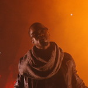

×
 Wolves di Kanye West
Wolves di Kanye West
Visualizzazioni: 7.467.947
"Wolves" esplora una gamma di emozioni, tra cui paura, speranza e amore. Kanye fa riferimento a sua madre, Donda West, oltre a paragonare se stesso e Kim a Mary e Joseph.
Fonte: GeniusLost out, beat up Dancin', down there I found you, somewhere out 'Round 'round there, right right there Lost and beat up Down there, dancin' I found you, somewhere out Right down there, right 'round there Lost and, found out Turned out, how you thought Daddy, found out How you turned out, how you turned out If mama knew now How you turned out, you too wild You too wild, you too wild You too wild, I need you now Got to love you Found you, found you Right now, right now Right now, right now If your mama knew how You turned out, you too wild You too wild, you too wild You too wild, and I need you now Lost and found now Cry, I'm not sorry Cry, who needs sorry when there's Hennessey? Don't fool yourself Your eyes don't lie, you're much too good to be true Don't fire fight Yeah I feel you burning, everything's burning Don't fly too high Your wings might melt, you're much too good to be true I'm just bad for you I was lost and beat up Turned out, burned up You found me, through a heartache Didn't know me, you were drawn in I was lost and beat up I was warm flesh, unseasoned You found me, in your gaze I found me, oh Jesus I was too wild And I need you now, lost and, found out, yeah You gotta let me know if I could be your Joseph Only tell you real shit, that's the tea, no sip Don't trip, don't trip, that pussy slippery, no whip We ain't trippin' on shit, we just sippin' on this Just forget the whole shit, we could laugh about nothin' I impregnate your mind, let's have a baby without fuckin', yo I know it's corny bitches you wish you could unfollow I know it's corny niggas you wish you could unswallow I know it's corny bitches you wish you could unfollow I know it's corny niggas you wish you could unswallow I know it's corny bitches you wish you could unfollow I know it's corny niggas you wish you could unswallow You tried to play nice, everybody just took advantage You left your fridge open, somebody just took a sandwich I said baby what if you was clubbin' Thuggin', hustlin' before you met your husband? Then I said, "What if Mary was in the club When she met Joseph around hella thugs? Cover Nori in lambs' wool We surrounded by the fuckin' wolves" "What if Mary was in the club 'Fore she met Joseph with no love? Cover Saint in lambs' wool We surrounded by the fuckin' wolves"
Wolves è un brano musicale del rapper statunitense Kanye West, tredicesima traccia del settimo album in studio The Life of Pablo (2016). La cantante australiana Sia e il rapper statunitense Vic Mensa hanno contribuito sia alla scrittura del testo che all'interpretazione vocale, pur non venendo in quest'ultimo caso accreditati.